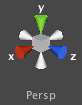
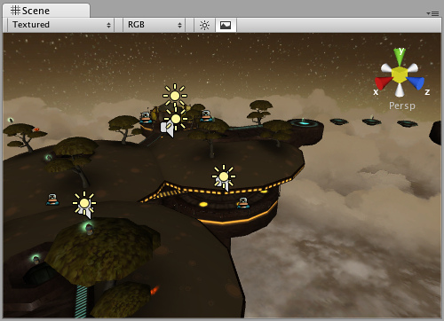
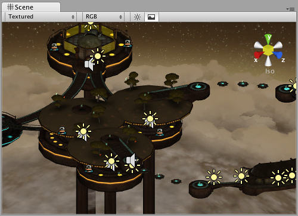

Scene View Navigation
The Scene View has a set of navigation controls to help you move around quickly and efficiently.
Arrow Movement
You can use the to move around the scene as though "walking" through it. The up and down arrows move the camera forward and backward in the direction it is facing. The left and right arrows pan the view sideways. Hold down the key with an arrow to move faster.
Focusing
If you select a GameObject in the hierarchy, then move the mouse over the scene view and press the key, the view will move so as to center on the object. This feature is referred to as frame selection.
Move, Orbit and Zoom
Moving, orbiting and zooming are key operations in Scene View navigation, so Unity provides several alternative ways to perform them for maximum convenience.
Using the Hand Tool
When the hand tool is selected (shortcut: ), the following mouse controls are available:
 Move: Click-drag to drag the camera around.
Move: Click-drag to drag the camera around. Orbit: Hold and click-drag to orbit the camera around the current pivot point.
Zoom: Hold ( on Mac) and click-drag to zoom the camera.
Holding down will increase the rate of movement and zooming.
Shortcuts Without Using the Hand Tool
For extra efficiency, all of these controls can also be used regardless of which transform tool is selected. The most convenient controls depend on which mouse or track-pad you are using:
| Action | 3-button mouse | 2-button mouse or track-pad | Mac with only one mouse button or track-pad |
|---|---|---|---|
| Move | Hold and middle click-drag. | Hold and click-drag. | Hold and click-drag. |
| Orbit | Hold and click-drag. | Hold and click-drag. | Hold and click-drag. |
| Zoom | Hold and right click-drag or use scroll-wheel. | Hold and right click-drag. | Hold and click-drag or use two-finger swipe. |
Flythrough Mode
The Flythrough mode lets you navigate the Scene View by flying around in first person similar to how you would navigate in many games.
- Click and hold the right mouse button.
- Now you can move the view around using the mouse and use the keys to move left/right forward/backward and the and keys to move up and down.
- Holding down will make you move faster.
Flythrough mode is designed for Perspective Mode. In Isometric Mode, holding down the right mouse button and moving the mouse will orbit the camera instead.
Scene Gizmo
In the upper-right corner of the Scene View is the Scene Gizmo. This displays the Scene View Camera's current orientation, and allows you to quickly modify the viewing angle.

You can click on any of the arms to snap the Scene View Camera to that direction. Click the middle of the Scene Gizmo, or the text below it, to toggle between Isometric Mode and Perspective Mode. You can also always shift-click the middle of the Scene Gizmo to get a "nice" perspective view with an angle that is looking at the scene from the side and slightly from above.

Perspective mode.
Perspective mode.

Isometric mode. Objects do not get smaller with distance here!
Isometric mode. Objects do not get smaller with distance here!
Mac Trackpad Gestures
On a Mac with a trackpad, you can drag with two fingers to zoom the view.
You can also use three fingers to simulate the effect of clicking the arms of the Scene Gizmo: drag up, left, right or down to snap the Scene View Camera to the corresponding direction. In OS X 10.7 "Lion" you may have to change your trackpad settings in order to enable this feature:
- Open System Preferences and then Trackpad (or type trackpad into Spotlight).
- Click into the "More Gestures" option.
- Click the first option labelled "Swipe between pages" and then either set it to "Swipe left or right with three fingers" or "Swipe with two or three fingers".
Page last updated: 2012-11-16